创意
精选 39 个相关案例
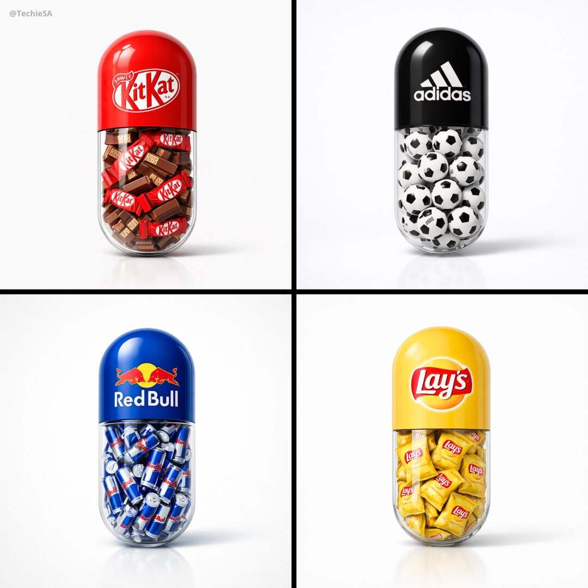
案例601: 极简胶囊品牌海报：透明剖面与品牌元素填充
以大型胶囊为核心主体，上半部分呈现品牌色与 Logo，下半部分用透明玻璃展示与品牌相关的物件填充，搭配纯白影棚背景和高端产品摄影布光，适合做极简商业海报与品牌视觉概念图。
🎨 查看AI提示词
🇨🇳 中文提示词
创作一张极简海报。画面中央放置一枚大型胶囊药丸。胶囊上半部分为纯色，并清晰印有 [BRAND] 的品牌标志；下半部分为透明玻璃材质。透明部分内部填满大量与品牌相关的 [OBJECT]。整体采用超干净的白色影棚背景、柔和阴影、高端产品摄影布光、具有光泽的写实材质、丰富细节、极简设计、居中构图与现代广告视觉风格。画幅尺寸为 1080x1080。
🇬🇧 English Prompt
Create a minimal poster. A large capsule pill centered in the frame. The top half of the pill is solid colored and features the [BRAND] logo clearly printed on it. The bottom half of the pill is trans...
案例600: 品牌全流程信息图设计：完整旅程叙事与工艺呈现
本提示旨在创建一张16:9品牌信息图，展示完整流程旅程、手工技艺特写与8个步骤的动态编号连线，突出质感与传承。
🎨 查看AI提示词
📝 提示词
16:9 [INDUSTRY_STYLE] brand infographic for [BRAND_NAME] showing the complete [PROCESS_TYPE] journey with [BRAND_TONE] storytelling. HEADER (top of frame): - Title centered: "[ENGLISH_TITLE]" in [...
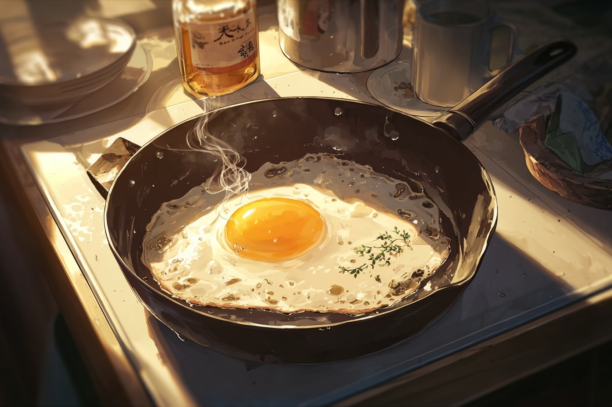
案例599: 动漫厨房提示：电影感美食插图与光影构图指南
电影感动漫美食场景提示：自上而下视角，侧光晨曦、蒸汽与温暖质感，营造怀旧宁静的氛围，适配 niji 7，强调光影与质感细节。
🎨 查看AI提示词
🇨🇳 中文提示词
从上往下看，新鲜出炉的【主题】在【容器或表面】上，令人叹为观止的电影动漫插图。柔和的晨光从侧面照射进来，投射出戏剧性的阴影和温暖的亮点。食物中升起的温和蒸汽，增加了温暖和真实感。气氛让人想起怀旧和宁静，周围环境细节丰富，自然光充足，逼真的质感，情感静止，以及精巧的动漫电影美学——niji 7 尝试一下，分享你的艺术
🇬🇧 English Prompt
Prompt share: Anime Kitchen Prompt: A breathtaking cinematic anime illustration of a freshly cooked [subject] in a [container or surface], viewed from a slight top-down angle. Soft morning sunligh...
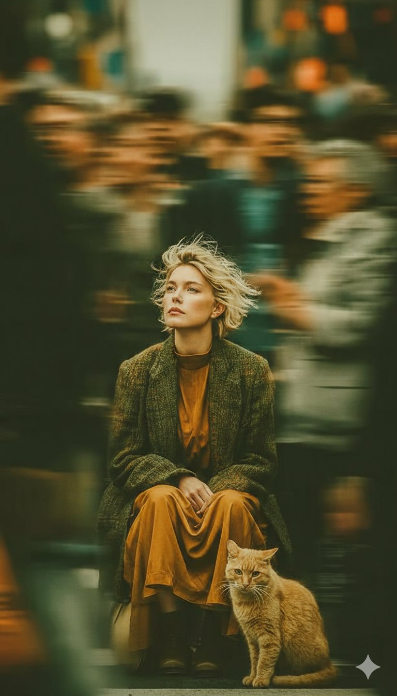
案例597: 长曝光街头人像：静默女子与姜猫在黄昏广场的对比
在黄昏的都市广场，年轻女子与姜猫静默并列，运用长曝光和背景模糊形成对比，呈现安静而深情的情绪。画面强调织物质感、暖色点缀与极致分辨率的艺术效果。
🎨 查看AI提示词
🇨🇳 中文提示词
{ "场景构图": { "主要主题": { "woman": { "description": "一位年轻女子，拥有被风吹乱的浅金色短发，表情沉思而疏离", "gaze": "目光略微向上，偏离镜头", "clothing": "搭配了大地色系的丝绒连衣裙和厚重、纹理明显的橄榄绿色粗花呢大衣" }, "comp...
🇬🇧 English Prompt
Nano Banana pro on Gemini app. Prompt { "scene_composition": { "primary_subjects": { "woman": { "description": "Young woman with short, wind-tossed blonde hair and a thoughtfu...
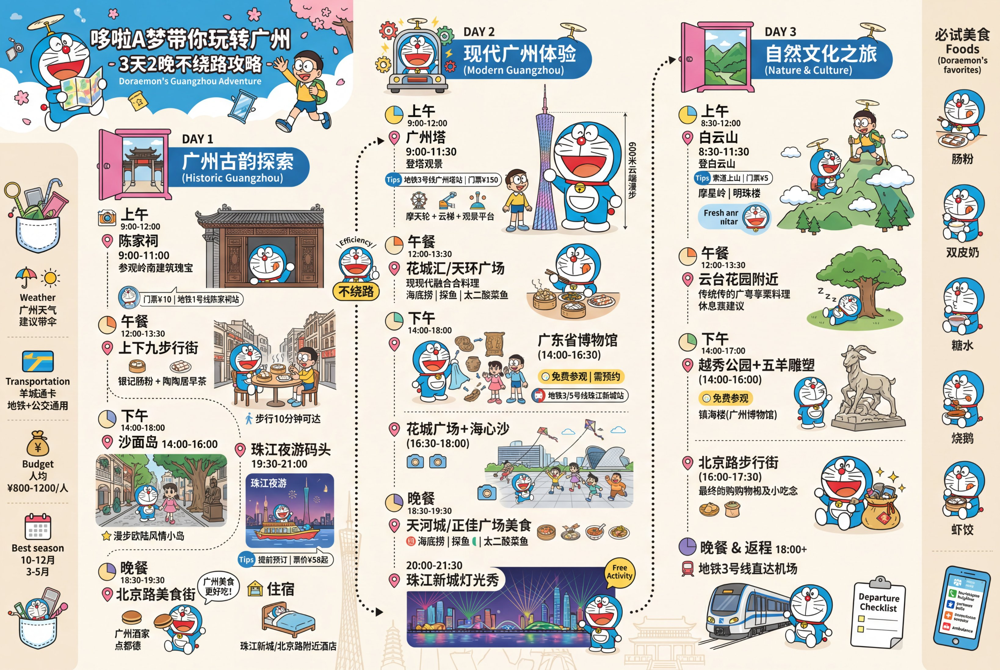
案例596: 哆啦A梦主题广州三日两晚不绕路攻略图含行程时间表与景点安排
结合哆啦A梦主题，提供广州三日两晚不绕路的图文攻略，含具体日程、时间点与景点推荐，便于在小红书等平台分享，也适合快速制作图文内容。
🎨 查看AI提示词
📝 提示词
使用哆啦A梦的角色和相关主题元素，生成一张图文并茂、带行程路线和时间安排的广州的三天2晚旅游不绕路攻略图。
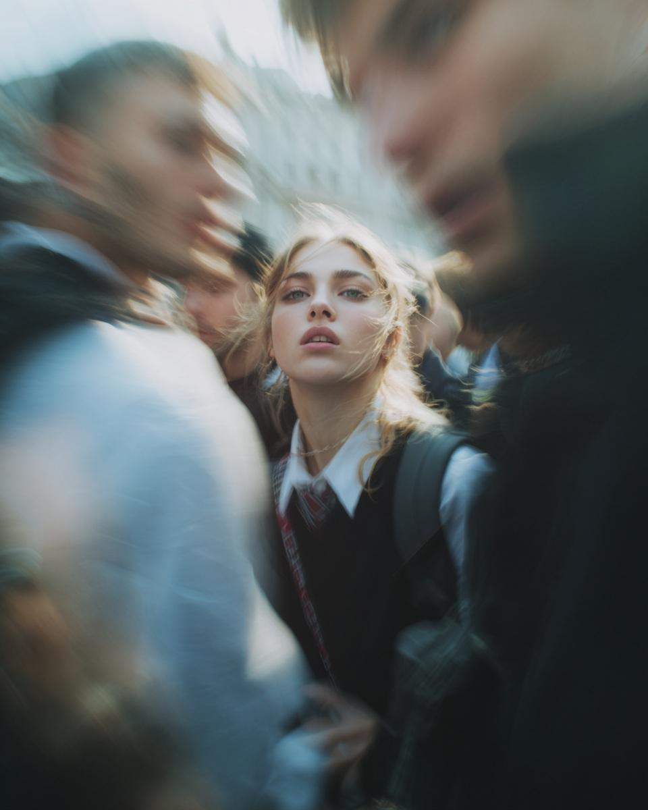
案例595: 街头偷拍风格的校服人像写真巴黎时装周场景
极近距离的狗仔式照片，聚焦面部与肩部，低角度强光下，背景拥挤模糊，呈现2000年代小报美学与巴黎时装周的即时真实氛围。
🎨 查看AI提示词
🇨🇳 中文提示词
提示：一位面部特征鲜明的女性被突然拍到的空中俯拍照片，正转向镜头。仅拍摄面部和肩膀，从低角度拍摄。强烈的现场强光，颗粒感高 ISO，原始的街头摄影感觉。背景显示拥挤的场景，动感模糊（巴黎时装周氛围）。强烈的、自发的能量，不完美和真实。她穿着校服。超写实，电影现实主义，高细节皮肤纹理，轻微镜头畸变。 相机风格：“35mm 狗仔队镜头，f/2.8，闪光灯过曝高光” 外观：“2000 年代小报照...
🇬🇧 English Prompt
Gemini Nano Banana Pro. Prompt: Paparazzi-style extreme close-up photo of a woman with striking facial features, caught off-guard while turning toward the camera. Face and shoulders only, shot from...
案例593: 在雪地调整提示词偶然捕捉的雪中眨眼甜美瞬间
记录一次幸福的意外：通过优化提示词，捕捉到雪地场景中年轻女性眨眼、比心的可爱瞬间，画面清新而温暖，氛围更迷人。
🎨 查看AI提示词
🇨🇳 中文提示词
"reference_analysis": { "style": "社交媒体美学摄影，柔焦，高调曝光，时尚肖像" "lighting": "明亮自然日光，强烈的雪地反射作为补光，雪面清晰的阴影", "colors": "以冰蓝色和亮白色为主，点缀柔和色调，奶油色的毛皮纹理", "mood": "俏皮，可爱，浪漫，冬日，纯真", "composition": "高角度向下拍摄，主体...
🇬🇧 English Prompt
prompt{ "reference_analysis": { "style": "Social media aesthetic photography, soft focus, high-key exposure, stylish portrait", "lighting": "Bright natural daylight, strong snow reflecti...
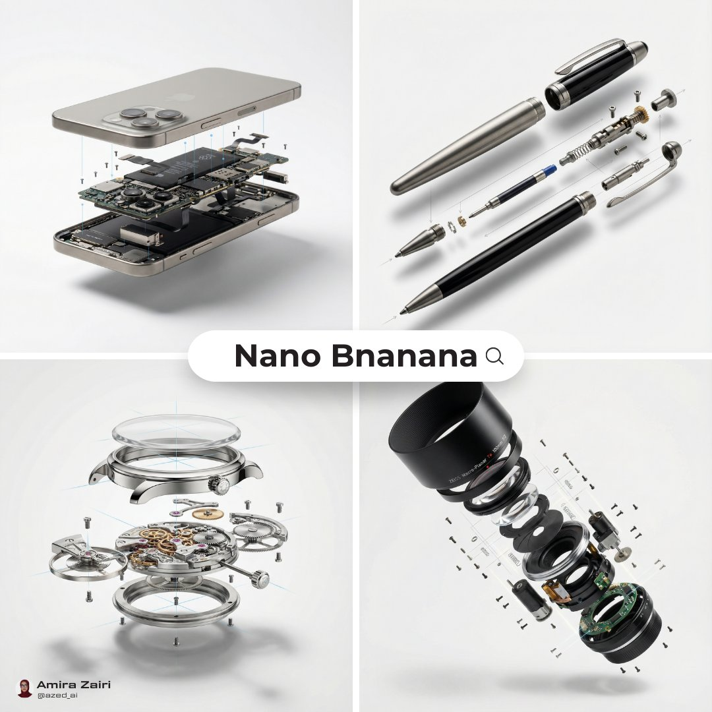
案例592: 高端产品展开视图内部结构的宏观摄影100mm镜头风格8K1:1
展示高端产品的展开视图与内部结构。外壳悬浮于核心之上，微小螺丝与部件悬浮，追求超真实的宏观摄影风格，8K分辨率、1:1比例。
🎨 查看AI提示词
🇨🇳 中文提示词
[产品], 高端产品广告, 白色无缝背景, 展开视图显示内部机械结构, 外壳悬浮于核心之上, 微型螺丝和组件悬浮, 完美对齐导轨暗示, 清晰柔和阴影, 超高真实感, 宏观产品摄影, 100mm 镜头视角, f/8, 8k, 1:1
🇬🇧 English Prompt
[product], high-end product advertising, white seamless background, exploded view with inner mechanics revealed, outer shell hovering above core, micro screws and components suspended, perfect alignme...

案例589: 办公室里的真实人与3D迷你立绘对比与互动
真人与同场景的3D迷你模型并列呈现，强调皮肤质感、毛孔细节、表情与互动动作，营造真实又带幽默的现代办公室氛围。
🎨 查看AI提示词
🇨🇳 中文提示词
纳米香蕉专业提示： 我和我的小 3D 立绘在办公室 成人人物的超现实主义电影肖像，面部完全可见，自然的人类皮肤纹理带有毛孔和细微瑕疵，以及逼真的发丝。真人坐在粉色牙科诊所的牙科椅上，手持一个小的 3D 微型模型，优雅地坐在一只手的手掌上，双腿交叉，姿态放松。4:3 横向比例。穿着牙科诊所服装，带有玫瑰色外套，手持牙科镜。 真人看着微型模型，表现出明显的惊讶和轻微的愉悦，眉毛上扬，微笑...
🇬🇧 English Prompt
Nano banana pro prompt: ME AND MY LITTLE 3D CHIBI IN THE OFFICE Ultra-realistic cinematic portrait of an adult person, with the face fully visible, natural human skin texture with pores and subtle...

案例588: 超写实火水元素平衡电影肖像生成指南與要点
描述一个面向镜头、左为火、右为水的对称超写实肖像，强调暖橙与冷蓝的强烈对比，以及电影级灯光、质感与超细纹理。
🎨 查看AI提示词
🇨🇳 中文提示词
{ "目标": "创作一幅超写实的电影肖像，表达火与水之间史诗般的平衡", "人物细节": { "主题": { "类型": "年轻女性", "姿态": "面向前方，位于画面中央", "表情": "平静、专注、有力" "凝视": "与相机直接对视", "头发": { "发型": "湿发，向后梳拢", "细节": { "FireSide...
🇬🇧 English Prompt
Gemini Nano Banana pro image generation Prompt:{ "Objective": "Create a hyper-realistic cinematic portrait expressing an epic balance between fire and water", "PersonaDetails": { "Subject...

案例586: 超新鲜柑橘汽水微距系列高端广告级成像与流体动力学
通过4:5竖屏超清微距呈现柑橘汽水的碳化与折射质感，打造高端饮品广告级成像。覆盖多场景光影与动态水花，提升商业视觉传播效果。
🎨 查看AI提示词
🇨🇳 中文提示词
"标题": "超新鲜柑橘汽水微距系列" "版本": "2.0_流体动力学_高速", "目标美学": "高端饮料商业广告" }, "技术基础": { "相机硬件": { "机身": "Phase One XF IQ4 150MP", "镜头": "Schneider Kreuznach 120mm LS f/4.0 Macro", "设置": "超高速快门（1/8000s 定格）...
🇬🇧 English Prompt
"project": { "title": "Hyper-Fresh Citrus & Soda Macro Series", "version": "2.0_Liquid_Dynamics_High_Speed", "target_aesthetic": "High-end Beverage Commercial Advertising" }, "tec...

案例585: 冬日乡村肖像：披肩雪花少女的凝视与温柔静默光影
冬日乡村静谧场景中，年轻女性回眸凝视，披肩雪花点缀，呈现自然质感与温暖对比。画面采用柔和漫射光与浅景深，呈现电影质感。
🎨 查看AI提示词
🇨🇳 中文提示词
Gemini Nano Banana Pro. 提示: { "主题": { "描述": "年轻女性，大约十几岁或二十出头" "姿态": "从肩后回望观众，身体微微侧转", "表情": "平静、中性、略带忧郁、直视" }, "面部": { "肤色": "白皙，自然肌理，脸颊和鼻子有明显的玫瑰色（冷潮红）", "眼睛": "大而清晰的黄绿色眼睛，焦点锐利，长睫毛", "...
🇬🇧 English Prompt
Gemini Nano Banana Pro. Prompt: { "subject": { "description": "Young woman, approximately late teens or early 20s", "pose": "Looking back over her shoulder at the viewer, body turned sli...
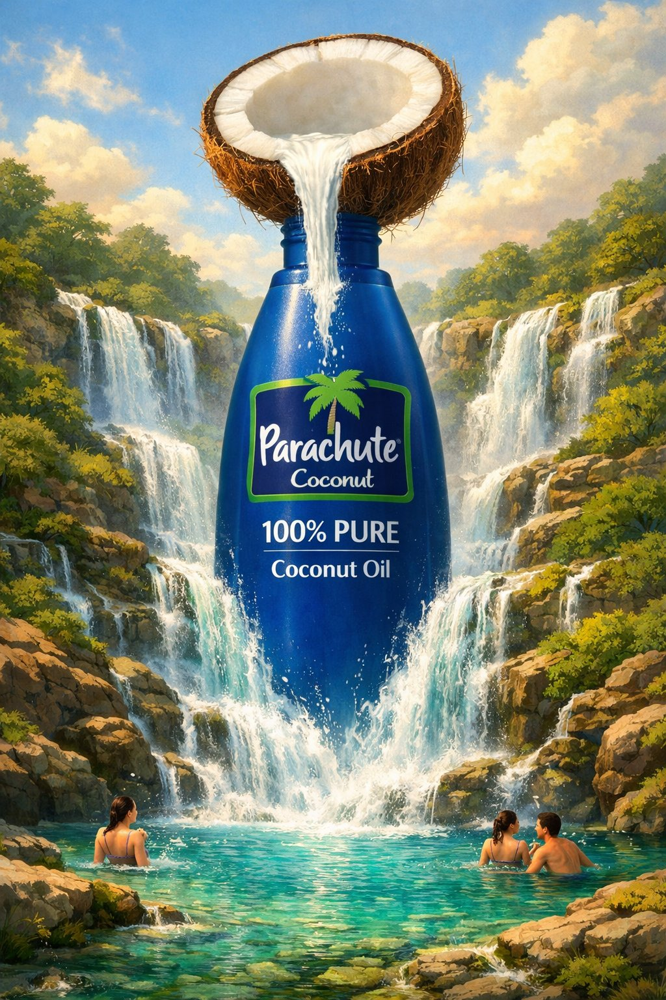
案例584: 为油品品牌设计的下一步食材插画提示超现实风格
通过ChatGPT图像1.5生成的超现实高端商业插画提示，强调将产品瓶身嵌入由核心成分构成的自然景观，并给出下一步食材创意。
🎨 查看AI提示词
🇨🇳 中文提示词
使用 ChatGPT 图像 1.5 创建 提示： 为[品牌名称][油类]创作的超现实高端商业插画，产品瓶身嵌入在一个由核心成分完全构成的自然景观中。该成分呈现出
🇬🇧 English Prompt
Created by using ChatGPT image 1.5 Prompt : Surreal premium commercial illustration for [BRAND NAME] [OIL TYPE], featuring the product bottle embedded into a massive natural landscape made entirely...

案例583: 今日自拍拼贴：胶片风格双联画的空灵晨光私照
呈现两联拼贴的空灵胶片风格自拍，左图镜面自拍，右图近景肩颈细节，光影柔和、颗粒感明显，营造安静亲密的晨间氛围。
🎨 查看AI提示词
🇨🇳 中文提示词
{ "prompt_configuration": { "风格预设": "林浩川电影美学" "媒体类型": "模拟胶片摄影双联画 (两联拼贴)" "整体氛围": "空灵，梦幻，轻盈，静谧的亲密，纯粹性感，过度曝光" } "全局技术参数": { "胶片类型": "中画幅，富士 Pro 400H 模拟", "胶片特性": "厚重自然颗粒感，柔和光晕，去饱和柔和粉彩色...
🇬🇧 English Prompt
{ "prompt_configuration": { "style_preset": "Rinko Kawauchi Film Aesthetic", "media_type": "Analog Film Photography Diptych (Two-panel collage)", "overall_mood": "Ethereal, dreamy, a...

案例580: 用 Nano Banana Pro 可视化五时代食物历史微缩景观
以高角度微缩景观呈现辣鸡翅在五个时代的形态与工人造型，强调层级分布、背景质感与长影效果，输出为1:1、8K分辨率的单图。
🎨 查看AI提示词
🇨🇳 中文提示词
提示：为辣鸡翅做这个：输入变量：[插入食物]（例如，炸鸡、寿司、玉米卷、咖啡） 系统指令： 生成一个超逼真的、高角度的“食物历史微缩景观”，采用曼陀罗格式排列。 **严重警告：场景必须由 1:87 比例的微型人偶（厨师）填充，这些人偶需与每个戒指所代表的具体时代相对应。** **1. 时间线分析：** 分析输入食物的历史，以确定 5 个时代中工人的服饰和工具： 阶段 0（中心）：现代厨...
🇬🇧 English Prompt
Prompt: do this for spicy chicken wings: Input Variable: [INSERT FOOD] (e.g., Fried Chicken, Sushi, Tacos, Coffee) System Instruction: Generate a hyper-realistic, high-angle "Food History Diorama" a...

案例577: 花田户外时尚人像：在强光直闪下的高能花海场景
在花田背景下拍摄，使用强光直闪，突出服装与花朵的鲜艳对比，营造高能且俏皮的时尚氛围。低角度仰拍增强画面张力，带来活力和略带超现实的视觉冲击。
🎨 查看AI提示词
📝 提示词
This backdrop + my OOTD = Absolute perfection. The scenery understood the assignment! thx @ZaraIrahh ——————prompt Use this photo attached to create a striking outdoor fashion portrait set i...

案例574: 寂静中的紫光瞬间：电影感优雅与身份锁定的四格拼贴
以寂静中的紫光照脸为起点，探讨优雅是否自足表达，并提供2×2网格超逼真拼贴的详细生成指令，强调身份锁定与统一造型带来的电影感视觉。
🎨 查看AI提示词
🇨🇳 中文提示词
{ “提示”：以 2×2 网格布局制作超逼真的四格照片拼贴画，营造电影般的低光美感。柔和的紫色和紫罗兰色环境光，细微的胶片颗粒感，以及纯色墙面背景。\n\n 身份锁定（绝对）：使用提供的参考照片中的同一张脸，确保所有四张照片中的身份完全一致。不得修改面部结构、比例、五官、表情、年龄、肤色、肤质或任何身份特征。参考脸在每一张照片中都必须保持 100%不变。\n\n 人物及造型（所有照片保持一致）：...
🇬🇧 English Prompt
Gemini Nano Banana { "prompt": "Ultra-realistic 4-frame photo collage in a 2×2 grid layout with a cinematic low-light aesthetic. Soft ambient purple and violet lighting, subtle film grain, and a p...

案例572: 车内静谧奢华瞬间：高角度镜头下的优雅与自信
车内柔和灯光映照下，颈间珍珠与宁静神态相得益彰。高角度拍摄捕捉到装扮的微妙优雅与静谧奢华，展现时尚与简约的完美平衡。
🎨 查看AI提示词
🇨🇳 中文提示词
车内捕捉到的一个轻松自然的瞬间，每一个细节都在讲述一个故事。 从室内柔和的灯光到颈间精致的珍珠项链，宁静的神态展现出一种沉稳的自信。 从高处拍摄，相机置于上方，捕捉到了这身装扮的微妙优雅和此刻的静谧奢华。 时尚与简约的完美平衡。
🇬🇧 English Prompt
An effortless moment captured inside the car, where every detail tells a story. From the soft glow of the interior to the delicate pearls around the neck, the serene expression echoes the quiet co...

案例570: 极致冰镇可乐液体飞溅定格：高端商业摄影级水花瞬间
本推文描绘一只成人手握透明玻璃杯，冰镇可乐在高速拍摄下瞬间爆裂飞溅，强调真实水花、湿润质感和强烈对比，打造高端商业广告风格的强劲可乐视觉。
🎨 查看AI提示词
🇨🇳 中文提示词
{ “主题”： { “描述”：“一只人手紧握着一个装满冰镇碳酸可乐的透明玻璃杯，画面定格在液体飞溅的瞬间。” “年龄”: “成人” “表达”： { “总体而言”：“不可见” }, “脸”： { "preserve_original": true, “化妆”： “无” } }, “头发”： { “颜色”： “不可见”， "样式": "不可见", “效...
🇬🇧 English Prompt
"subject": { "description": "A human hand gripping a transparent glass filled with ice-cold carbonated cola, frozen at the moment of an explosive liquid splash", "age": "adult", "expres...

案例568: 雾镜中的温馨夜感自拍：暖光、羞怯微笑与圣诞氛围
9:16竖屏自拍，浴室雾镜与暖光营造温馨夜感。主角湿润高马尾、露肩圣诞袍，指尖抹雾，镜前绘有圣诞月亮，整体氛围亲密柔和。
🎨 查看AI提示词
🇨🇳 中文提示词
{ "image_type": "照片", “质量”: “普通” "aspect_ratio": "9:16", “方向”: “垂直”， "camera_style": "手机自拍", “场景”： { “环境”：“浴室镜子”， "mirror_state": "雾蒙蒙的", “蒸汽”：“可见的”， “灯光”： { 类型：暖顶灯， “强度”： “柔和”， “心情”：“温馨的...
🇬🇧 English Prompt
{ "image_type": "photo", "quality": "regular", "aspect_ratio": "9:16", "orientation": "vertical", "camera_style": "phone selfie", "scene": { "environment": "bathroom mirror", ...

案例564: 现代简约窗边场景创意绘制指南
本文介绍了如何在温馨的窗边场景中，通过柔和光线和散景效果，结合连续线条白色涂鸦，打造具有艺术感的现代风格照片背景。适合设计师和创意者参考使用。
🎨 查看AI提示词
🇨🇳 中文提示词
提示：创作一张温馨的窗边[场景]照片背景，柔和的阳光和温暖的散景效果营造出舒适的氛围。在背景上添加一个用连续线条绘制的白色[物体]涂鸦，并将其置于前景显眼位置。涂鸦应略带光泽，完美居中，并与画面融为一体，且无阴影。请使用简约、现代且富有艺术感的风格。
🇬🇧 English Prompt
Prompt: Create a realistic photo background of a cozy [SCENE] by a window with soft sunlight and warm bokeh blur. Add a clean white doodle of an [OBJECT] drawn in continuous line art style on top, pla...
案例563: 复古技术插图：谷歌 Gemini Nano Banana pro 3.0 工具展示
本图为谷歌 Gemini Nano Banana pro 3.0 的复古技术插图，描绘一只戴手套的手握黄铜绘图圆规和老式钢笔，背景为房屋建筑蓝图及机械元素，展现传统制图与现代技术的结合。
🎨 查看AI提示词
🇨🇳 中文提示词
{ “main_focus”: “一只戴着手套的手拿着一个黄铜绘图圆规和一支老式钢笔” “背景元素”：[ “房屋的建筑蓝图” “机械的
🇬🇧 English Prompt
Vintage Technical illustration by Google Gemini Nano Banana pro 3.0 Prompt { "subject": { "main_focus": "A gloved hand holding a brass drafting compass and a vintage fountain pen", ...
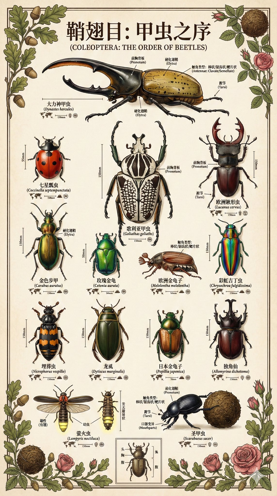
案例561: 博物馆级蜜蜂昆虫标本科普图谱设计指南
本推文详细描述了一张高质量蜜蜂昆虫标本科普图谱的设计思路，强调物理真实感、科学标注与儿童友好内容，结合博物学家风格，展现蜜蜂的结构、功能及趣味知识，适合制作博物馆展品级别的教育资料。
🎨 查看AI提示词
📝 提示词
提示词： 请创建一张博物馆展品级别的昆虫知识科普图谱，聚焦展示【蜜蜂】。 核心布局： - 中心：巨大的昆虫标本图像，占据画面60-70% - 周围：科学标注和趣味百科信息，呈放射状或分区排布 - 整体：如同博物馆玻璃展柜中的精美标本说明牌 昆虫标本呈现（核心要求）： 1. 物理真实感：昆虫标本直接平放在纸面上，不是"图片中的图片" 2. 视角：垂直俯视，标本与纸面在同一...

案例560: 极端视角下的可爱动物碗内摄影艺术
这是一张采用极端内视角拍摄的广告照片，镜头置于深碗底部，广角镜头捕捉到一只可爱动物探入碗中，鼻子特写且透视夸张，眼神灵动，画面明亮清晰，展现出极致的萌态与欢乐氛围。
🎨 查看AI提示词
🇨🇳 中文提示词
广告照片，采用极端视角，从深碗内部拍摄。相机放置在碗底，镜头向上。碗的内壁呈弧形环绕，从各个方向框住画面，碗的圆形边缘清晰可见，仿佛通向天空。一只极其可爱的小动物将头完全探入碗中，直视镜头。它的鼻子离镜头非常近，由于广角镜头的透视效果略微变形，看起来像是在嗅闻镜头。它的眼睛又大又灵动，与观众进行着眼神交流。广角镜头，f/1.4 光圈，极浅的景深，强烈的透视变形和透视缩短效果，夸张的鼻子尺寸，柔和明...
🇬🇧 English Prompt
Prompt Studio: Cuteness Overload Advertising photo, extreme POV from inside a deep food bowl. The camera is physically placed at the very bottom inside the bowl, facing upward. The interior walls o...
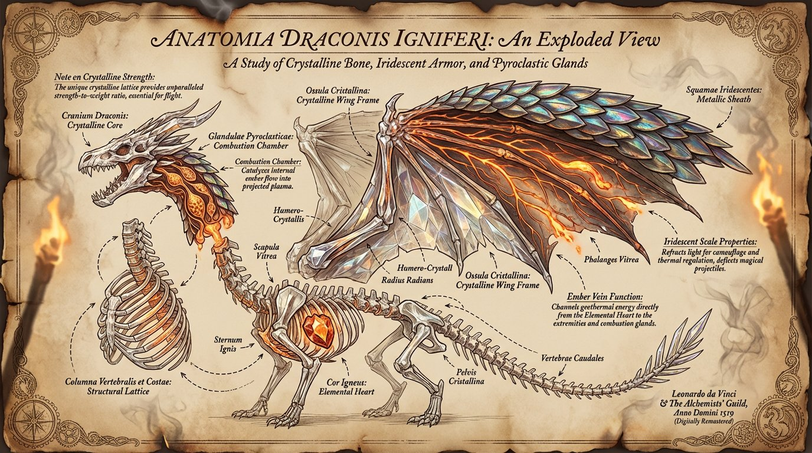
案例559: 龙的解剖结构爆炸图：奇幻写实与达芬奇风格融合
这幅高分辨率龙的解剖爆炸图细致展示了翅膀、鳞片、喷火腺和骨骼等部位，采用金属光泽鳞片与晶莹骨骼，背景为古羊皮纸配烟雾与火炬光影，辅以优雅注释，灵感源自达芬奇草图，结合现代数字艺术技术创作。
🎨 查看AI提示词
🇨🇳 中文提示词
创作一幅龙的解剖结构爆炸图，将龙的翅膀、鳞片、喷火腺和骨骼结构分解成带有标签和连接箭头的各个组成部分。每个部分都以精细的细节呈现，展现出金属光泽的鳞片、闪耀的脉络和晶莹剔透的骨骼。背景为古老的羊皮纸，并配以微妙的烟雾效果和温暖的火炬光影。使用优雅的草书字体添加说明性注释。横幅蓝图式海报，奇幻写实风格，高分辨率，灵感源自达芬奇的草图，并融入现代数字技术。
🇬🇧 English Prompt
Prompt : Create an exploded-view illustration of a dragon's anatomy, dissecting its wings, scales, fire-breathing glands, and skeletal structure into labeled components with connecting arrows. Each p...

案例558: 用Gemini Nano Banana Pro打造极致写实圣诞女郎造型
本次作品利用Gemini Nano Banana Pro工具，生成一位穿着圣诞老人主题服装的女性形象，细节极为写实，呈现温暖梦幻的节日氛围。整体风格融合专业影棚摄影质感与柔和电影灯光，打造出浓郁且富有诱惑力的圣诞节视觉效果。
🎨 查看AI提示词
🇨🇳 中文提示词
{ "任务": "图像生成", "reference_image": "use_uploaded_reference_image", "identity_constraints": { "face_identity": "与参考图像 100%完全匹配", "no_facial_changes": true, "no_body_proportion_changes": true }, ...
🇬🇧 English Prompt
Try this Christmas Look using Gemini Nano Banana Pro 试试用 Gemini Nano Banana Pro 打造这款圣诞造型 { "task": "image_generation", "reference_image": "use_uploaded_reference_image", "identity_constrain...
案例557: Nano banana Pro助力打造复古颓废风高角度艺术写真
使用Nano banana Pro成功生成一幅高角度鸟瞰视角的东亚女偶像形象，展现其倒挂姿势和丰富纹身细节。画面采用90年代复古棕褐色调，背景为凌乱的黄色衣橱，传递疲惫而浪漫的颓废摇滚美学。
🎨 查看AI提示词
🇨🇳 中文提示词
reference_image": "image_0.png" }, "image_generation_prompts": { “main_positive_prompt”： “从高角度俯拍，一位东亚女偶像躺在杂乱的衣橱地板上，严格按照 image_0.png 中所示的倒立姿势和人体结构摆放。她身穿一件深蓝色蕾丝迷你连衣裙，上身是挤奶女工式的紧身胸衣，领口为心形，袖子是短袖，裙摆呈荷叶...
🇬🇧 English Prompt
"reference_image": "image_0.png" }, "image_generation_prompts": { "main_positive_prompt": "High-angle bird's-eye view shot of a female east Asian idol subject lying on the floor of a clutt...
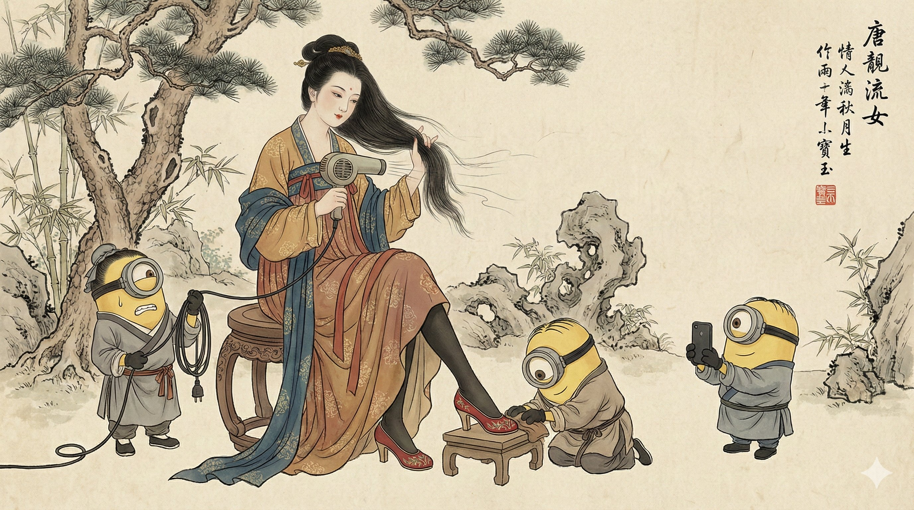
案例551: 古今融合：唐代贵妇与现代吹风机的幽默画作
这幅工笔风格的中国传统水墨彩画融合古典与现代元素，描绘唐代贵妇使用现代吹风机，身边黄人仆从各司其职，展现幽默的时代错置和创意融合。
🎨 查看AI提示词
🇨🇳 中文提示词
这是一幅工笔风格的中国传统水墨彩画，绘制在古旧的宣纸上。画中一位身着华丽唐代汉服的贵妇坐在木凳上，手持现代吹风机吹干她飘逸的长发。她穿着黑色丝袜，一只脚踩着红色高跟鞋，倚靠在小凳上。 三个身着古代中国仆人服、头戴礼帽的小黄人侍奉着她：左边一个看起来很紧张，手里拿着吹风机的电源线；中间一个跪在地上，用布擦拭她的红皮鞋；右边一个举着智能手机，帮她拍照。背景是古老的苍劲松树、竹林和太湖岩石。 ...
🇬🇧 English Prompt
A traditional Chinese ink and color painting in Gongbi style on aged rice paper texture. A noblewoman in elaborate Tang Dynasty Hanfu robes sits on a wooden stool, holding a modern hairdryer to dry he...

案例550: Nano Banana Pro创作“萝莲 Maiden”壁画，细节逼真如梦似幻
这幅由Nano Banana Pro创作的“萝莲 Maiden”壁画融合中式韵味和细腻的摄影质感，展现一位面容娇美的洋娃娃般女子，背景繁花似锦，场景如梦似幻，彰显其高超的数字艺术技巧。
🎨 查看AI提示词
🇨🇳 中文提示词
一幅超高清晰度、摄影质感极强的街头壁画，画面呈现强烈的中国风韵味。 画中描绘着一位绝美的卡通风女子正面特写头像，她神态柔美而宁静。墙体顶部被一大片盛开的蔷薇花覆盖，茂密的绿叶与繁盛的花朵向外舒展，部分枝条从墙顶垂落而下，与女子的头发巧妙融合，使她的秀发宛如由层层叠叠的蔷薇花组成。这些繁密的花朵簇拥着女子的头部，形成了一顶瑰丽的花冠，视觉效果华美浪漫。 背景中蓝天澄澈，点缀着朵朵白云；地...
🇬🇧 English Prompt
A street mural with ultra-high definition and an extremely strong photographic texture, the picture presenting a strong Chinese style charm. The painting depicts a close-up portrait of an exquisite...

案例549: 与狗狗一起在悬崖边飞无人机的奇妙体验
想象一下，你和你的狗狗在悬崖边操控无人机，享受壮丽的自然风光。通过Gemini应用程序，你可以生成一幅超逼真的无人机航拍图像，捕捉这一刻的美好。只需简单几步，便可创建属于你自己的精致风景画面！
🎨 查看AI提示词
🇨🇳 中文提示词
生成一张超逼真的无人机航拍风景图，画面中一名男子（附图为参考照片，请 100%还原参考照片中的人物面部，拍摄全身照，无人机距离该男子十英尺）坐在悬崖边的岩架上。他身穿印有“NANO BANANA”（纳米香蕉）字样的黑色 T 恤、修身破洞牛仔裤，戴着橙色镜片的 Oakley 太阳镜。他双腿悬空于岩架边缘，神情平静地直视无人机，手中握着遥控器。他的英国斗牛犬坐在他身旁。无人机镜头还捕捉到了周围令人惊叹...
🇬🇧 English Prompt
2. Click create image and upload your photo 3. Copy and Paste the prompt below on "Describe your image" section 4. Click Generate button Generate a hyper-realistic landscape image o...

案例548: 极致真实感的动漫人物合影：鱼眼自拍创意呈现
这是一张9/16竖版鱼眼自拍，结合了哆啦A梦、鸣人等经典动漫角色，场景明亮、夸张表情与逼真光影融合，展现了创新的风格化写实主义效果。
🎨 查看AI提示词
🇨🇳 中文提示词
这是一张 9/16 竖版鱼眼自拍，照片中一位女性与[哆啦 A 梦、鸣人、大雄、五条悟、成镇（宝可梦中的小智）]合影，画面极具真实感。我们都咧嘴大笑，表情夸张滑稽。场景设定在一个明亮的小客厅，以白色为主色调。采用高角度拍摄，呈现极致的鱼眼畸变效果。逼真的电影级光影效果与风格化的写实主义完美融合，展现了动漫人物的独特魅力。
🇬🇧 English Prompt
> 9/16 vertical format fisheye selfie of an ultra-realistic woman from a photo with [Doraemon, Naruto, Nobita, Satoru Gojo, Sung Jin, who is Ash from Pokémon]. We’re all smiling with silly, exaggerate...

案例546: 电影感情绪拼贴：复古风格的中性时尚女性肖像
这组2x2拼贴展现一位身穿 oversized 西装、妆容 bold red lipstick 的年轻女性，环境设定在昏暗的旧楼梯间，营造出富有情绪和复古氛围的 cinematic 风格，强调丰富的光影与纹理细节。
🎨 查看AI提示词
🇨🇳 中文提示词
{ "image_description": { "overall_composition": "一幅情绪化的、电影感十足的 2x2 拼贴画，画中是同一位年轻女子", “主题”： { “外貌”： { “头发”：“短而蓬乱”， “妆容”：“大胆的红色唇膏”， “风格”：“引人注目的中性时尚大片造型” }, 着装：{ “西装”： “超大号黑色西装”， “衬衫”： “宽松的白色敞领...
🇬🇧 English Prompt
{ "image_description": { "overall_composition": "A moody, cinematic 2x2 collage featuring the same young woman", "subject": { "appearance": { "hair": "Short, tousled", ...
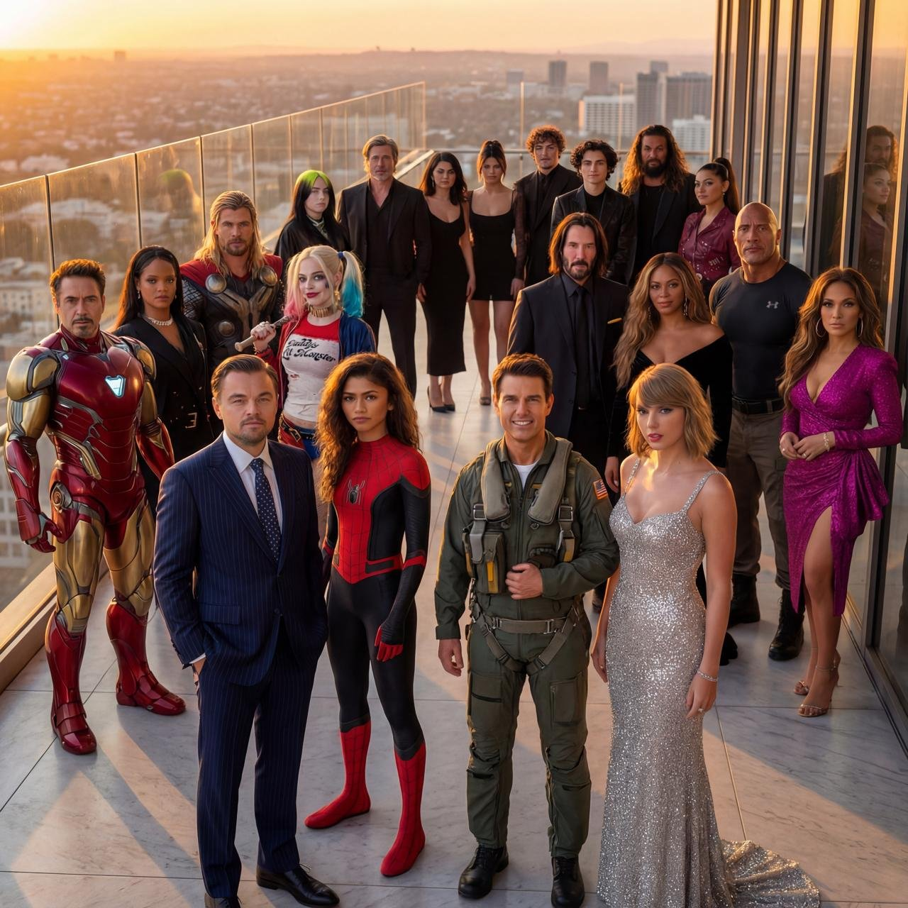
案例545: 纳米香蕉效果震撼！探索AI创意新边界
这篇推文介绍了纳米香蕉的惊人表现，结合ALT提示展现了AI在数字艺术和创意领域的强大潜力。让人期待未来更多创新应用。
🎨 查看AI提示词
🇨🇳 中文提示词
创作一幅超写实、超清晰、全彩的大幅图像，展现不同时代的众多名人齐聚一堂，共同呈现在一张宽广的电影式画面中。图像必须如同完美拍摄的时尚杂志封面，拥有无可挑剔的光线、栩栩如生的肌肤纹理，以及头发、毛孔、反光和织物纤维等细微之处。整体风格与氛围 照片级真实感，8K 分辨率，浅景深，柔和自然补光+强烈的金色边缘光 高动态范围，校准色彩分级 肤色完美准确 清晰的织物细节，可见每一根线...
🇬🇧 English Prompt
Create a hyper-realistic, ultra-sharp, full-color large-format image featuring a massive group of celebrities from different eras, all standing together in a single wide cinematic frame. The image mus...

案例543: Grok Imagine被90年代宝丽来氛围彻底吸引
这条推文展示了Grok Imagine对一组模仿90年代宝丽来风格的低光聚会照片的热情，强调其真实、复古的视觉效果。图片包含模糊、颗粒感和糟糕构图，完美还原真实快照的氛围。
🎨 查看AI提示词
🇨🇳 中文提示词
1:1 宽高比，一张 90 年代末的宝丽来照片。照片中的主角 [SUBJECT] 出现在一个随意、略显不完美的瞬间。背景是一间脏乱的房屋地下室，后面有人正在聚会。这张照片具有典型的低光宝丽来摄影风格，动态模糊、刺眼的闪光、颗粒感以及糟糕的构图，这些都是真实聚会快照的典型特征。
🇬🇧 English Prompt
1:1 aspect ratio, a Polaroid from the late 90s. The main character [SUBJECT] appears in the photo, caught in a casual, imperfect moment. The background shows a dirty house basement with people partyin...

案例540: AI生成超写实野生动物探险照片，打造你的专属野生旅程
这篇推文介绍如何使用Gemini应用，通过上传个人照片并应用AI提示，生成逼真的野生动物摄影场景，结合名人元素，打造个性化的野生探险体验。
🎨 查看AI提示词
🇨🇳 中文提示词
超写实的野生动物摄影场景，(使用上传照片中的参考面部)。一位穿着专业野生动物探险服装的男人——浅棕色户外衬衫、耐磨工装裤和结实的野外靴。他平躺在草地上，手持专业单反相机，装着大型远摄镜头，专注于野生动物。在他肩上坐着一只好玩的小狮子，望向远方。黄金时刻的自然光线，非洲草原背景，电影般的景深效果，8K 细节，鲜艳的色彩。保持我的面部 100%准确。高清质量单反相机。
🇬🇧 English Prompt
Ultra-realistic wildlife photography scene, (use reference face from uploaded photo). A man wearing proper wildlife-safari clothing — light brown outdoor shirt, rugged cargo pants, and sturdy field bo...
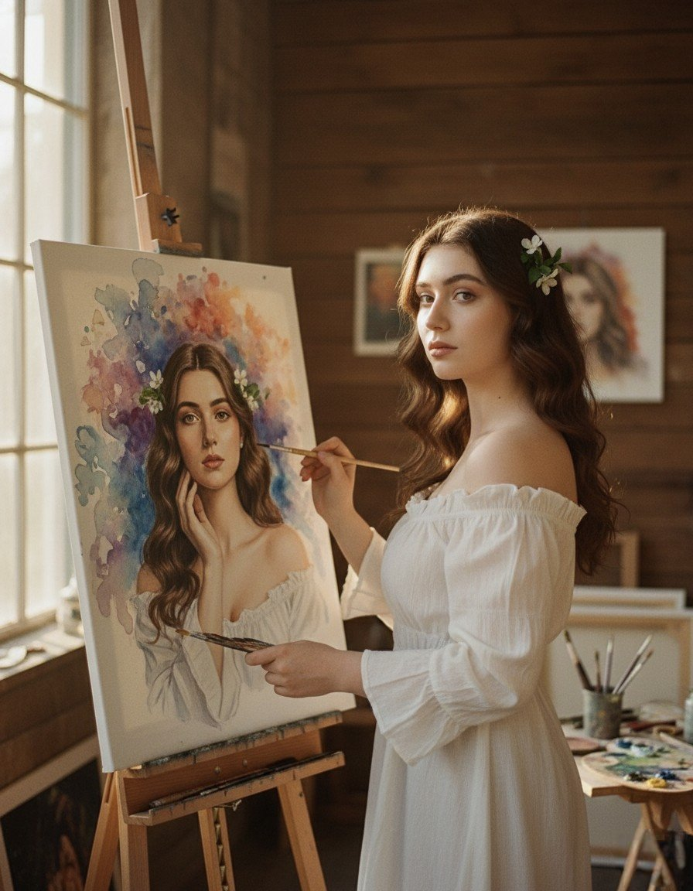
案例538: 使用 Gemini Nano Banana 创作个性自画像的创新体验
这篇推文介绍了如何利用 Gemini Nano Banana 工具，为自己创作独特的自画像。通过提示引导，激发创意，实现数字艺术的个性表达，适合艺术爱好者和创意设计师尝试。
🎨 查看AI提示词
🇨🇳 中文提示词
一张专业的、电影感的照片（非数字艺术或绘画）捕捉了一位面容与上传参考图相同的美女，艺术家正在画架上绘制自己的写实自画像。她将一支细画笔靠近脸颊，站在画布前，画布上有一个充满活力的水彩泼溅背景。她拥有一头长卷曲的棕色头发，上面点缀着微妙的鲜花装饰。她穿着一件紧身、低领、褶边白色农家女上衣，略微露出胸部。拍摄于一个暖光、木质的摄影棚环境中。构图聚焦，景深深远，自然皮肤纹理，胶片颗粒感，超精细，8k，照...
🇬🇧 English Prompt
A professional, cinematic photograph (not digital art or painting) captures a beautiful young woman with the same facial features as the uploaded reference,artist painting her own realistic self-portr...
案例537: 使用GPTAI打造个性化2025生日主题3D插图
这篇推文展示了利用ChatGPT和Gemini AI创作的生日祝福特别图片，包括3D皮克斯风格日历、生日数字和可爱的小人物形象，彰显创意与技术结合的魅力。
🎨 查看AI提示词
🇨🇳 中文提示词
一个风格化的 3D 皮克斯风格日历，突出显示 2025 年 5 月 10 日为某人的生日，配有蛋糕图标和醒目的数字"10"。底部文字写着"我的月份，我的生日"，还有一个可爱的 3D 小人物（参考附件图片），戴着俏皮的微笑，手持气球，周围装饰着鲜花和蛋糕。
🇬🇧 English Prompt
a stylized 3D Pixar-like calendar for may 2025, highlighting may 10 as the person's birthday with a cake icon and a large number "10". The text at the bottom says, "MY MONTH, MY BIRTHDAY", and there's...

案例533: 穿着充气羽绒服的鸟儿：自然风光中的趣味瞬间
这幅真实摄影风格的图片展现了一只穿着彩色充气羽绒服的鸟儿栖息在干枯树枝上，背景为模糊的绿色草原，融合了创意与自然美感，令人感受到奇趣的鸟类瞬间。
🎨 查看AI提示词
🇨🇳 中文提示词
一只穿着充气[颜色]羽绒服的鸟儿，栖息在干枯的树枝顶端。背景是模糊的绿色草原，采用自然光效的真实摄影风格。
🇬🇧 English Prompt
A bird wearing an inflatable [COLOR] down jacket perched on the top of a dry tree branch. the background is a blurred green grassland, in the style of real photography with natural lighting.当你的滴答声比空气轻
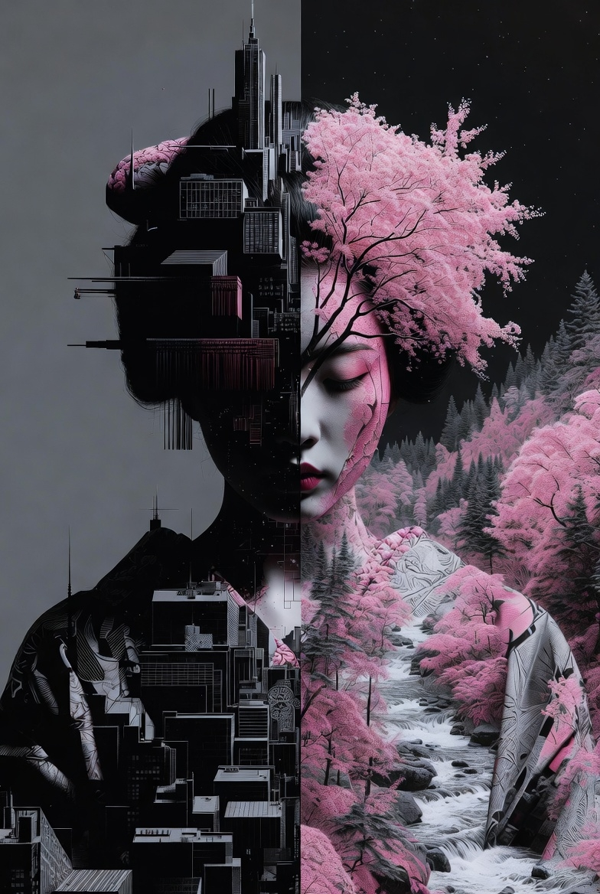
案例532: 双重曝光艺术：现代人与自然的对比之美
这幅由Grok Imagine创作的双重曝光艺术将艺伎轮廓与城市与自然景观融合，展现现代人类在城市与自然之间的双重存在，充满视觉冲击与哲理思考。
🎨 查看AI提示词
🇨🇳 中文提示词
一位艺伎被描绘在双重曝光技术中，其中一半的轮廓包含几何黑色城市景观元素，而另一半则揭示出野性的粉色自然景观，代表着现代人类的双重存在。
🇬🇧 English Prompt
A geisha portrayed in a Double Exposure technique where half the silhouette contains geometric black cityscape elements while the other half reveals wild pink natural landscapes, representing the dual...